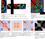

ModularityLoss#
- class hypercoil.loss.modularity.ModularityLoss(nu, affiliation_xfm=None, exclude_diag=True, gamma=1, null=<function girvan_newman_null>, normalise_modularity=True, normalise_coaffiliation=True, directed=False, sign='+', name=None, **params)#
Differentiable relaxation of the Girvan-Newman modularity.
This relaxation supports non-deterministic assignments of vertices to communities and non-assortative linkages between communities. It reverts to standard behaviour when the inputs it is provided are standard (i.e., deterministic and associative).
Girvan-Newman Modularity Relaxation
The relaxed modularity loss is defined as the negative sum of all entries in the Hadamard (elementwise) product between the modularity matrix and the coaffiliation matrix.
\(\mathcal{L}_Q = -\nu_Q \mathbf{1}^\intercal \left( B \circ H \right) \mathbf{1}\)
The modularity matrix \(B\) is the difference between the observed connectivity matrix \(A\) and the expected connectivity matrix under some null model that assumes no community structure, \(P\): \(B = A - \gamma P\).
The community resolution parameter \(\gamma\) essentially determines the scale of the community structure that optimises the relaxed modularity loss.
By default, we use the Girvan-Newman null model \(P_{GN} = \frac{A \mathbf{1} \mathbf{1}^\intercal A}{\mathbf{1}^\intercal A \mathbf{1}}\), which can be interpreted as the expected weight of connections between each pair of vertices if all existing edges are cut and then randomly rewired.
Note that \(A \mathbf{1}\) is the in-degree of the adjacency matrix and \(\mathbf{1}^\intercal A\) is its out-degree, and the two are transposes of one another for symmetric \(A\). Also note that the denominator \(\mathbf{1}^\intercal A \mathbf{1}\) is twice the number of edges for an undirected graph.)
The coaffiliation matrix \(H\) is calculated as \(H = C_{in} L C_{out}^\intercal\), where \(C_{in} \in \mathbb{R}^{(v_{in} \times c)}\) and \(C_{out} \in \mathbb{R}^{(v_{out} \times c)}\) are proposed assignment weights of in-vertices and out-vertices to communities. \(L \in \mathbb{R}^{c \times c)}\) is the proposed coupling matrix among each pair of communities and defaults to identity to represent associative structure.
Note that, when \(C_{in} = C_{out}\) is deterministically in \(\{0, 1\}\) and \(L = I\), this term reduces to the familiar delta-function notation for the true Girvan-Newman modularity.
Penalising this favours a weight that induces a modular community structure on the input matrix – or, an input matrix whose structure is reasonably accounted for by the proposed community affiliation weights.
Warning
To conform with the network community interpretation of this loss function, parameters representing the community affiliation \(C\) and coupling \(L\) matrices can be pre-transformed. Mapping the community affiliation matrix \(C\) through a softmax function along the community axis lends the affiliation matrix the intuitive interpretation of distributions over communities, or a quantification of the uncertainty of each vertex’s community assignment. Similarly, the coupling matrix can be pre-transformed through a sigmoid to constrain inter-community couplings to \((0, 1)\).
Note
Because the community affiliation matrices \(C\) induce parcellations, we can regularise them using parcellation losses. For instance, penalising the entropy will promote a solution wherein each node’s community assignment probability distribution is concentrated in a single community. Similarly, using parcel equilibrium will favour a solution wherein communities are of similar sizes.
- Parameters
- nufloat (default 1)
Loss function weight multiplier.
- affiliation_xfmcallable or None (default None)
Transformation operating on the affiliation matrices (for instance, a softmax). This transformation is precomposed with the relaxed modularity.
- exclude_diagbool (default True)
Exclude weights along the diagonal (i.e., self-loops) when computing the modularity.
- gammanonnegative float (default 1)
Resolution parameter for the modularity matrix. A smaller value assigns maximum modularity to partitions with large communities, while a larger value assigns maximum modularity to partitions with many small communities.
- nullcallable (default girvan_newman_null)
Function of the input tensor block that returns, for each adjacency matrix in the input tensor block, a suitable null model.
- normalise_modularitybool (default True)
Indicates that the resulting matrix should be normalised by the total matrix degree. This may not be necessary for many use cases – for instance, where the arg max of a function of the modularity matrix is desired.
- normalise_coaffiliationbool (default True)
Indicates that all weights in the community assignment matrix block should be renormalised to max out at 1. Note that this is unnecessary if the affiliations have already been passed through a softmax.
- directedbool (default False)
Indicates that the input adjacency matrices should be considered as a directed graph.
- sign‘+’, ‘-’, or None (default ‘+’)
Sign of connections to be considered in the modularity.
- namestr or None (default None)
Identifying string for the instantiation of the loss object.
- **params
Any additional parameters are passed to the null model.
Methods
forward(A, C[, C_o, L])Compute a differentiable relaxation of the Girvan-Newman modularity.
Methods Documentation
- forward(A, C, C_o=None, L=None)#
Compute a differentiable relaxation of the Girvan-Newman modularity.
- Parameters
- ATensor
Block of adjacency matrices for which the modularity is to be computed.
- CTensor
Proposed community affiliation of vertices in the source set. Each slice is a matrix \(C^{(i)} \in \mathbb{R}^{I \ times C}\) that encodes the uncertainty in each vertex’s community assignment. \(C^{(i)}_{jk}\) denotes the probability that vertex j is assigned to community k. If this is binary-valued, then it reflects a deterministic assignment and reduces to the standard Girvan-Newman modularity.
- C_oTensor or None (default None)
Community affiliation of vertices in the sink set. If None, then it is assumed that the source and sink sets are the same, and C_o is set equal to C.
- LTensor or None (default None)
Probability of affiliation between communities. Each entry \(L_{ij}\) encodes the probability of a vertex in community i connecting with a vertex in community j. If None, then a strictly assortative structure is assumed (equivalent to L equals identity), under which nodes in the same community preferentially coaffiliate while nodes in different communities remain disaffiliated.
- register_sentry(sentry)#
- register_action(action)#
{kind=link}